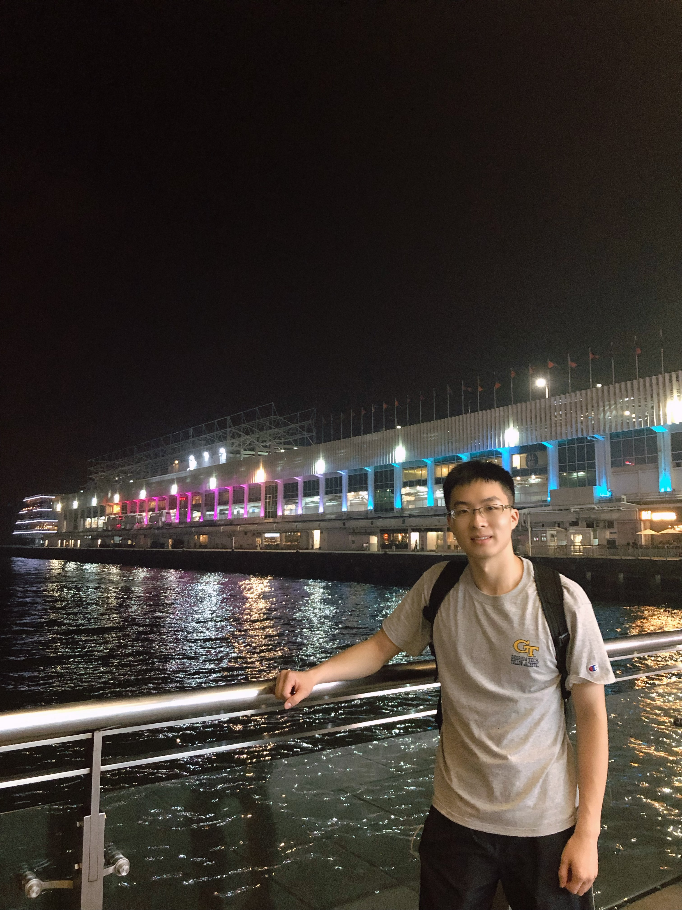

Welcome! My name is Huaigu Li and I am a first year Computer Science PhD student at Georgia Instittue of Technology.
My research focus on Human-computer Interaction (HCI), Education Technology, and Accessibility. Feel free to look at my research to learn more!
Address: TILES Lab, 85 Fifth St. NW, Atlanta, GA 30332-0760 USA
E-mail: hli723@gatech.edu